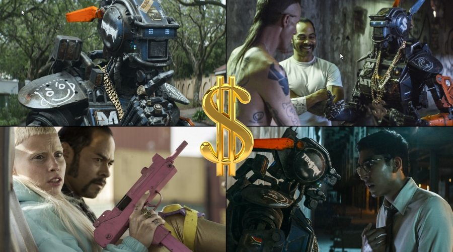

Chappie is a science fiction comedy film directed by Neill Blomkamp who co-wrote the screenplay with his spouse Terri Tatchell, a Canadian screenwriter. The movie is based on Blomkamp’s short film Tetra Vaal, and similarly to his first sci-fi film District 9, the film was shot, and the storyline is set, in Johannesburg, South Africa.
The South Africa born, Canada based film director has been peddling Afrikaner wares since his first film, and Chappie, which not only casts his long-time friend, South African actor Sharlto Copley in the main role (voice and motion capture), but also features Watkin Tudor Jones (a.k.a. Ninja) and Anri du Toit (a.k.a. Yo-Landi Visser) of the South African alternative hip-hop group Die Antwoord, is not an exception.
In the near future, South African police struggles to cope with a rash of gun violence and a spiralling crime rate in Johannesburg. The long overdue respite comes in the form of highly efficient, semi-autonomous robotic law-enforcement units from the weapons manufacturer Tetravaal. The robots, known as Scouts, prove to be an instant success, and the crime rate falls to a record low.
At the company’s Johannesburg plant, the Scout designer, Deon Wilson (Dev Patel) attracts the envy of fellow robotics engineer Vincent Moore (Hugh Jackman), whose own design, the remotely-operated battle platform ‘MOOSE’, is derided by the Tetravaal’s customers, who consider Moore’s creation far too clunky and an overkill for their public law-enforcement needs.
Deon is not content with his creations and, in his free time at home, secretly develops software that exhibits true artificial intelligence. When he wants to test the AI on one of the decommissioned Scouts, Tetravaal CEO Michelle Bradley (Sigourney Weaver), who sees this as an unwelcome distraction from the ‘serious’ business matters, denies his request. Undeterred, Deon steals the damaged robot and loads it into his van, along with some spare parts required for its repair and the ‘guard key’ necessary to update the robot’s operating system.
In the meanwhile, a small gang consisting of Ninja, Yolandi and Yankie (Jose Pablo Cantillo) displeases the local gangster boss Hippo (Brandon Auret), who gives them 7 days to pay a debt of 20 million rand. The three are at their wits’ end how to get such a huge amount of money at such a short notice, when Yolandi comes up with an ‘ingenious’ idea: Scouts are just electronic devices, like television sets, she argues, so surely there must be some kind of ‘remote’ that could turn them off, allowing the gang to pull off a huge heist unhindered by the police robots. The rest of the gang likes the plan and decides to kidnap one of Tetravaal’s engineers. By an unlucky coincidence, this engineer happens to be Deon, who is ambushed by the trio on his way home.
After the gangsters take Deon to their hideout in an old factory, they are disappointed to learn that there isn’t such a remote control or, indeed, any other way to turn off the Scouts. Finding the broken robot in the van, they instead force Deon to re-program the damaged Scout to fight for them. Deon, after threatened with death, agrees and installs the AI software into the Scout, but explains that the re-programmed robot will exhibit child-like behaviour and will need to learn everything, including language, from scratch. This doesn’t suit the gangsters, as they are under time pressure, but they have no other choice. Deon is forced to leave, but not before compelling the AI-enhanced Scout to make a promise to never kill a human, and ‘Chappie’, as Yolandi names the robot, stays with the gangsters.
Yolandi’s maternal instincts kick in and she tries to protect Chappie, but Ninja grows impatient with his slow development, due to both the impending deadline from Hippo and Chappie’s irreplaceable battery running out, giving him only days to live. Ninja tries to toughen-up child-like Chappie by leaving him to fend for himself in a rough neighbourhood, where he is first attacked by a group of youths and later captured by Vincent, who has found out about Chappie after following Deon to the gangsters’ hideout.
Vincent successfully extracts the ‘guard key’ from Chappie’s chassis for his own, nefarious use, but when he wants to cut the, now superfluous, robot to pieces by a power saw, terrified Chappie manages to jump out of the van and ultimately find his way to the only place he knows as his ‘home’ – the gangsters’ hideout.

After Chappie refuses to handle firearms (remembering the solemn vow he had made to Deon), Ninja and Yankie trick the robot to turn to crime by training him in martial arts and bladed weapons handling, lying to him about needing the money from the robberies to replace his faulty body for a new one with a full battery.
During the course of the next few days, Chappie goes through a steep learning curve, with Ninja and Yolandi becoming his adoptive ‘parents’, learning about life the hard way and, just like his ‘mommy’ and ‘daddy’, becoming a street-smart, slum-hardened, bad-ass gangsta, stealing and robbing for his ‘parents’, while never forgetting the promise he had made to Deon.
Chappie’s newly learned martial skills come very useful in the final showdown between his gangsta ‘family’ and the MOOSE, after Vincent uses the stolen ‘guard key’ to upload a virus into all Scouts, rendering them useless and sparking massive riots across the city, in order to prove the worth of his uber-sized battle droid, which he unleashes on the gangsters.
At the end, Chappie finally warms up to Deon, after initially rejecting him (because Ninja lied to him that Deon built him purposely with a near-empty battery, condemning him to an early death), and when his battery eventually runs out and he faces a difficult choice to preserve his own life, or save the life of his ‘maker’ he opts to save Deon.

As far as the production goes, this movie is a lot better than some critics would have had you believe. Sure, there are some narrative shortcomings, but these can be easily overlooked as this flick is really fun to watch. The film is not only jam-packed with well-timed gags, making it in parts laugh-out-loud funny, but is also moving and thought-provoking in places. All in all, Chappie is yet another solid entry to the science fiction genre by film director Neill Blomkamp.
TRIVIA: Watkin Tudor Jones a.k.a. Ninja of ‘Die Antwoord’ almost starred in another Neill Blomkamp’s film, Elysium, having been offered the main role, but he turned the offer down.